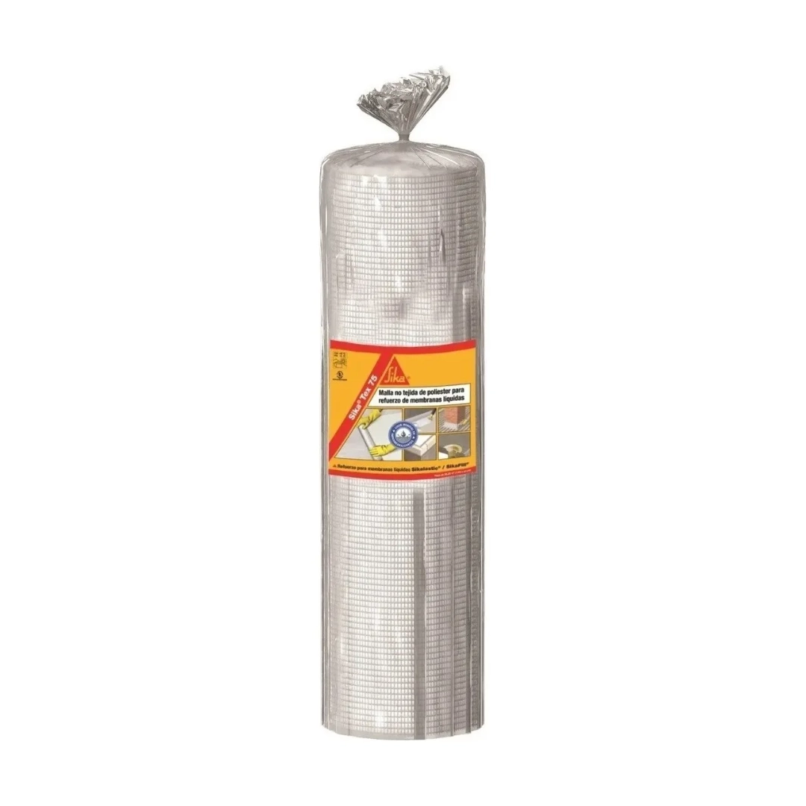

MI-01
Descripción: Sika Tex-75 es una malla no tejida, fabricado a partir de filamentos continuos de poliéster al 100%, no reticulados, unidos mecánicamente por agujas, sin resinas ni colas, para refuerzo de membranas líquidas Sikalastic y SikaFill.
Sika Tex-75 se utiliza como material de refuerzo de impermeabilizaciones de techos ejecutadas con productos líquidos, aplicados 'in situ', tales como son los Sistemas Sikalastic y SikaFill.
Considerar incremento de metraje por desperdicios y solapes. El rollo de 26,25m² da un área efectiva de 24,25m² con solapes de 10cm.